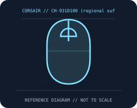

[ MICE AND TRACKBALLS // IDENTIFIED COMPONENT ]
CORSAIR M75 AIR Wireless Gaming Mouse
Symmetrical 60 g wireless gaming mouse with CORSAIR MARKSMAN optical tracking, optical switches, and USB-C charging.

MODEL IDENTIFICATION: CH-931D100 (regional suffixes such as -NA apply). Confirm printed identifiers, revision, region, and included accessories before repair or compatibility claims.
Model specifications
| Catalog leaf | Mice and trackballs |
|---|---|
| Exact model / identifier | CH-931D100 (regional suffixes such as -NA apply) |
| Sensor and switches | MARKSMAN optical sensor, up to 26,000 DPI, 650 IPS and 50 g. Optical main switches rated by CORSAIR for 100 million clicks. Slipstream is marketed as sub-1 ms; a numeric report-rate setting is not asserted here. |
| Wired/wireless interface; polling and DPI | SLIPSTREAM Wireless 2.4 GHz via receiver, Bluetooth, or wired USB connection/charging. iCUE provides customization on supported hosts. |
| Dimensions and weight | 128 × 65 × 41.6 mm; 60 g. |
| Host and driver compatibility | Basic HID operation depends on Bluetooth or USB host support. Device customization and firmware features use CORSAIR iCUE on supported Windows/macOS versions; wired data and charge behavior depend on cable/host. |
| Power and battery | Rechargeable internal battery over USB-C; up to 34 hours via SLIPSTREAM or 100 hours via Bluetooth per CORSAIR, with lighting and use affecting runtime. |
| Revision and SKU caveats | Check complete CH-931D100 regional suffix, receiver, and firmware; do not assume the wired mode or quoted life applies identically across radio modes. Optical switch ratings and battery-life figures are manufacturer claims. |
Preservation and service
Keep the receiver, cable, battery cover, and included accessories with the identified mouse. Clean optical apertures and trackball contacts without introducing liquid; record host OS, driver/firmware version, connection mode, and battery condition during tests.
Published maximum DPI, polling, click-life, and runtime values are manufacturer figures under specific test conditions, not a guarantee of individual-unit performance.
Manufacturer sources
- CORSAIR M75 AIR product pageManufacturer product or support documentation; confirm the exact SKU, region, and revision against the device label.
- CORSAIR downloads and iCUE supportManufacturer product or support documentation; confirm the exact SKU, region, and revision against the device label.
Manufacturer documentation changes over time; retain the applicable manual and revision with the physical equipment record.